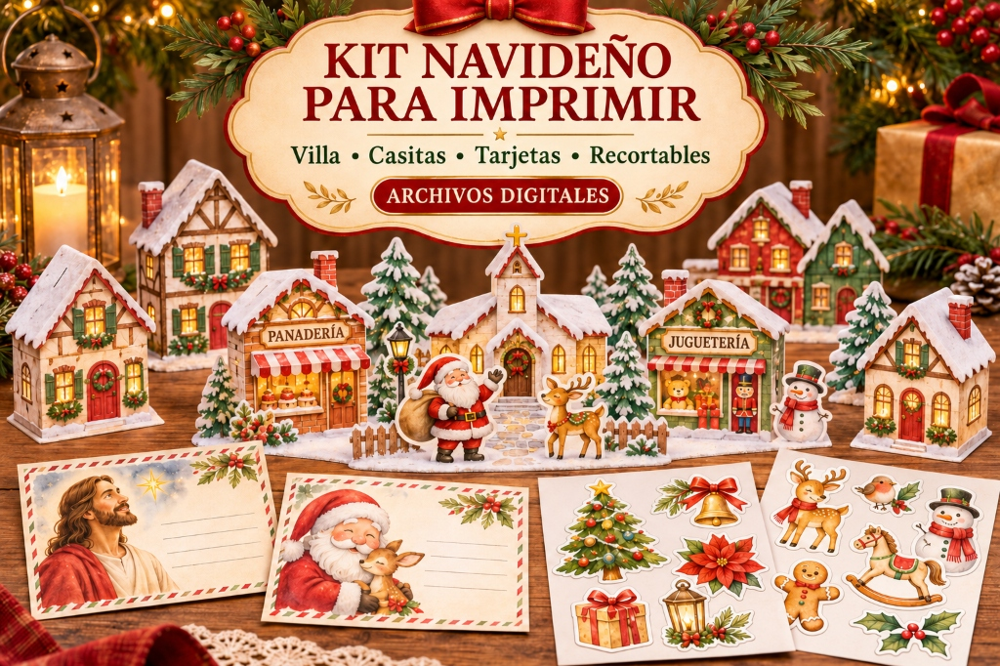
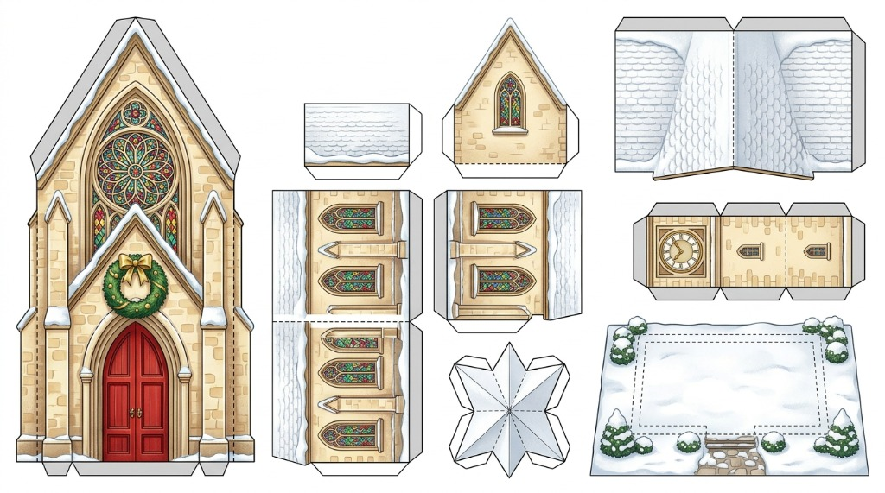
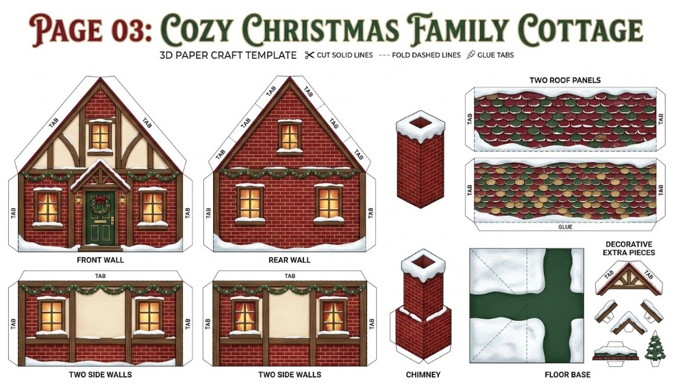
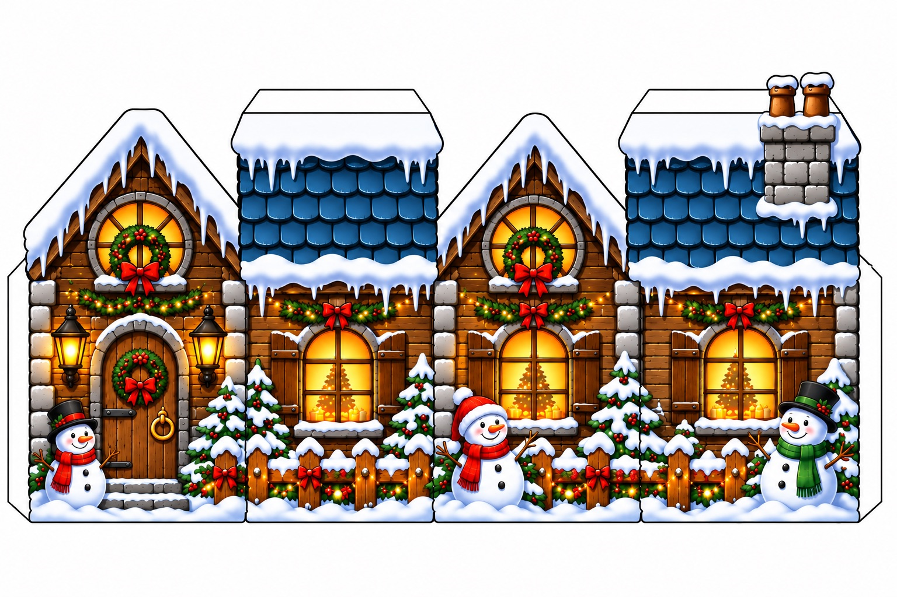
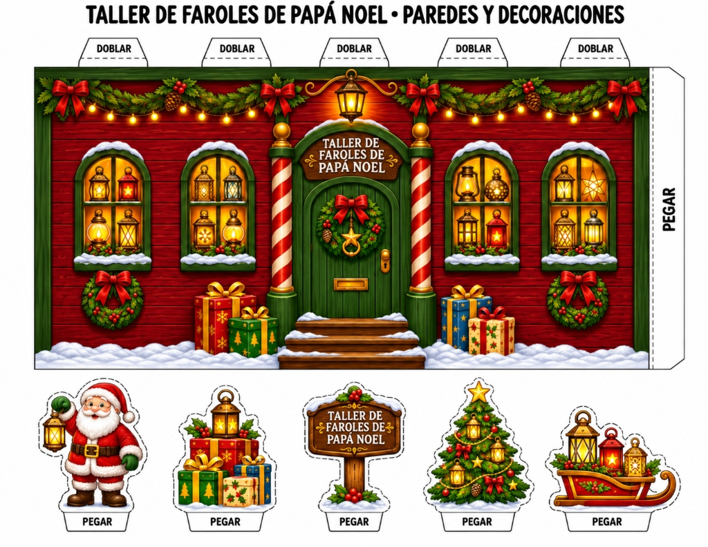
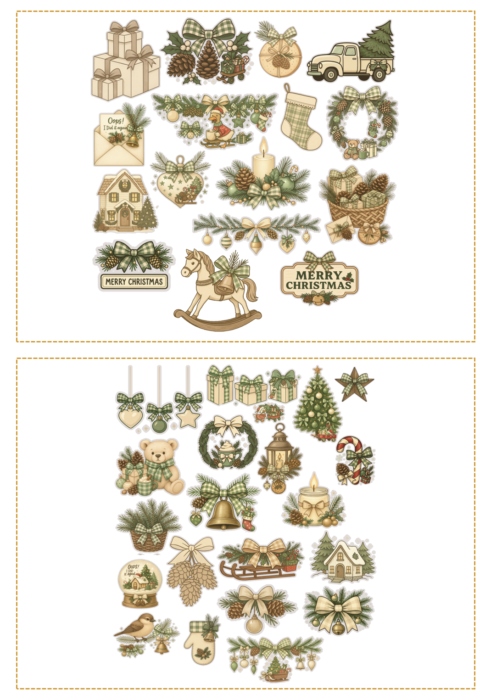
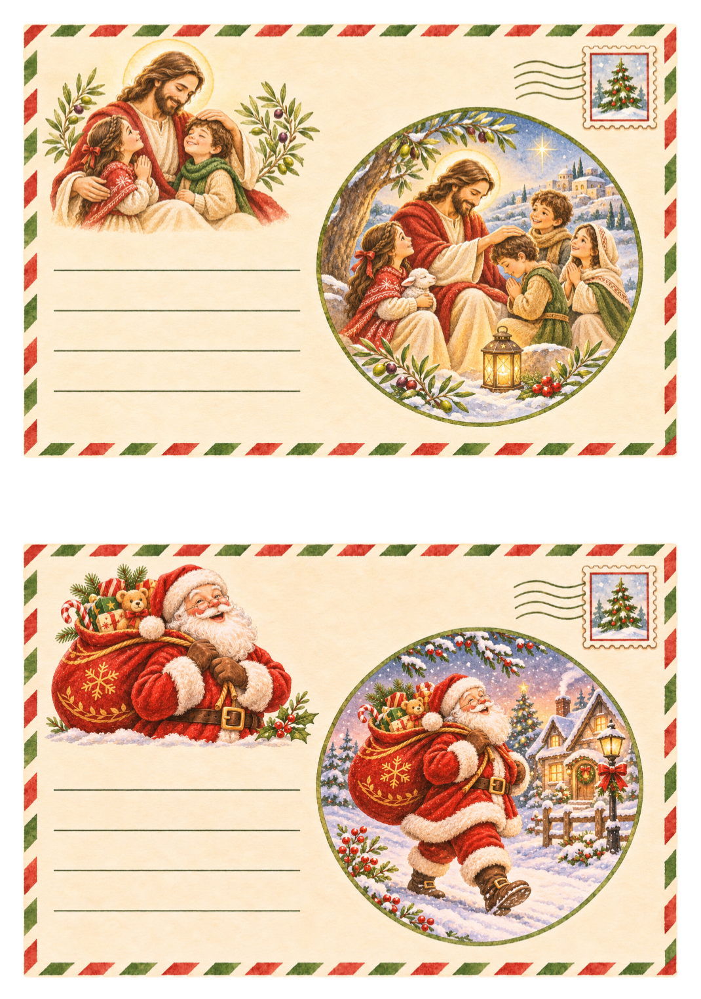
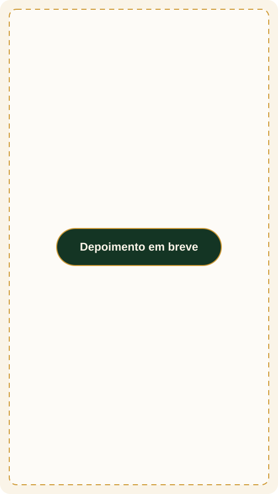

1. Baixar
Escolha o Kit Navideño Completo (ou a opção individual) e receba o acesso para salvar os arquivos digitais no computador ou celular.
Produto 100% digital para baixar e imprimir em casa · Não enviamos produtos físicos
Crie uma vila natalina, monte casinhas, prepare cartões e decore seus projetos com um kit digital cheio de ideias para imprimir e fazer em casa.

Pagamento único · Acesso digital após a confirmação da compra
O Kit Navideño Completo reúne moldes de construções, dezenas de casinhas, recortes decorativos e cartões-postais para você montar cenários natalinos em casa, criar com a família e preparar lembranças cheias de carinho.

Moldes e imagens digitais organizados para imprimir, recortar e montar passo a passo.
Monte a Vila Natalina com construções, personagens e acessórios, além de coleções extras de casinhas para decorar mesas, estantes, aparadores ou cantinhos especiais da casa.
Uma proposta acolhedora para reunir crianças e adultos longe das telas, estimular a criatividade em sala de aula e personalizar presentes com recortes e cartões escritos à mão.
Você recebe os arquivos digitais para imprimir em casa ou em uma gráfica/papelaria, escolhendo o papel ou cartolina mais adequado para cada montagem.
Os materiais são principalmente visuais; alguns moldes trazem indicações breves em inglês e possuem diferentes tamanhos de folha (nem todos vêm padronizados em A4).
“Mais do que enfeites de papel, é a alegria de criar sua decoração, reunir a família e entregar cartões escritos à mão para quem você ama.”
Baixe seus arquivos digitais, monte seus projetos no seu tempo e guarde o material para imprimir novamente sempre que quiser.
Em quatro passos simples você baixa os arquivos e começa a montar sua decoração e seus cartões em casa, sem depender de frete ou entregas físicas.
Escolha o Kit Navideño Completo (ou a opção individual) e receba o acesso para salvar os arquivos digitais no computador ou celular.
Imprima em casa ou em uma gráfica/papelaria, escolhendo a gramatura do papel ou cartolina e ajustando o tamanho da folha conforme o projeto.
Recorte com tesoura os contornos das construções, casinhas, personagens, figuras decorativas e cartões-postais de Natal.
Dobre, cole as abas para montar sua vila e suas casinhas, decore seus ambientes e escreva mensagens especiais nos cartões para presentear.
Por um pagamento único de US$ 17,90 no total, o Kit Navideño Completo já inclui a Vila Natalina e mais quatro coleções completas para você decorar, criar atividades e preparar cartões de Natal.

O cenário principal do seu Natal em papel: imagens e moldes em formato JPG para você imprimir, recortar e montar construções detalhadas, personagens natalinos e acessórios que dão vida à vila.

Dez modelos encantadores de casinhas de papel com visual natalino clássico para expandir a sua vila ou montar pequenos cenários espalhados pela casa.

Trinta modelos variados e vibrantes de casinhas natalinas para multiplicar suas opções de decoração e oferecer atividades criativas para várias crianças ao mesmo tempo.

Ilustrações e elementos natalinos prontos para imprimir e recortar, ideais para personalizar cada detalhe das suas criações e embalagens de Natal.

Vinte e cinco modelos de cartões-postais para você imprimir, escrever dedicatórias à mão e acompanhar presentes para familiares, amigos, alunos e colegas.
Confira as experiências de quem já conhece nossos materiais.

Depoimento em breve

Depoimento em breve

Depoimento em breve
O Kit Navideño Completo reúne todos os 5 materiais pelo melhor custo-benefício, ou você pode escolher apenas a Vila Natalina individual.
Importante: você escolhe apenas uma das duas opções. O Kit Navideño Completo custa US$ 17,90 no total e já inclui a Vila Natalina — você não precisa comprar a opção de US$ 9,90 antes.
Opção mais simples, indicada para quem deseja montar somente a vila principal.
Todos os 5 materiais reunidos em uma única compra por US$ 17,90 no total.
Tire suas dúvidas sobre o Kit Navideño Completo e os arquivos digitais antes de escolher sua opção.
O produto é 100% digital. Não enviamos nenhum item físico pelos Correios ou transportadora. Após a confirmação do pagamento, você recebe o acesso aos arquivos digitais para baixar, imprimir, recortar e montar em casa.
Você pode escolher entre duas opções de pagamento único, sem precisar comprar a opção básica antes:
1. Vila Natalina (US$ 9,90): opção mais simples que inclui os arquivos digitais em JPG da Vila Natalina com construções, personagens e acessórios.
2. Kit Navideño Completo (US$ 17,90 no total): é a nossa oferta completa. Já inclui a Vila Natalina e acrescenta uma coleção com 10 modelos de casinhas natalinas, uma coleção com 30 modelos de casinhas coloridas, um pacote de recortes decorativos natalinos e 25 cartões-postais de Natal para imprimir e escrever. Ao escolher o Kit Completo, você paga apenas US$ 17,90 no total.
Você pode imprimir em uma impressora doméstica ou levar os arquivos a uma papelaria ou gráfica rápida. Os moldes foram elaborados em diferentes tamanhos de papel conforme o modelo (nem todos os arquivos estão padronizados em formato A4), permitindo ajustar a configuração de impressão de acordo com a folha que você for utilizar.
Papel, tinta, tesoura e cola não estão incluídos. Para montar os projetos em casa, você precisará de folhas de papel ou cartolina (papéis mais firmes deixam as construções e casinhas melhor estruturadas), impressão colorida, tesoura e cola escolar.
As folhas de montagem são principalmente visuais e fáceis de identificar pelas linhas de recorte e dobra, mas alguns moldes contêm textos e instruções breves em inglês (nem todos os arquivos estão em português ou espanhol).
Os 25 cartões-postais de Natal incluídos no Kit Navideño Completo possuem ilustrações natalinas, linhas para você escrever sua mensagem à mão e uma segunda ilustração redonda no próprio cartão, com temas como Jesus adulto, Papai Noel, renas, pinguins e outros animais.
Já a imagem da Vila Natalina montada apresentada no topo da página tem caráter ilustrativo, pois o resultado físico montado ainda não foi testado e depende do papel, da configuração de impressão e da montagem feita em casa.